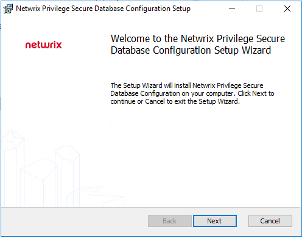
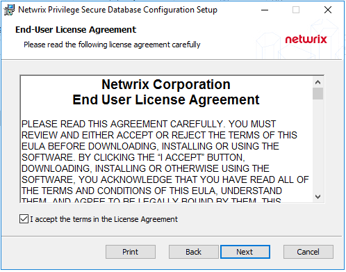
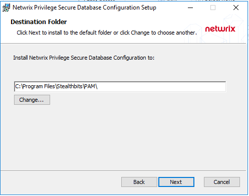
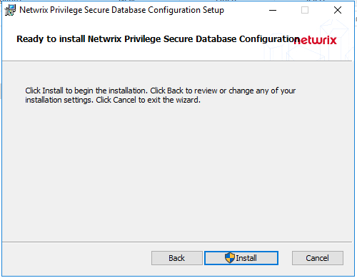
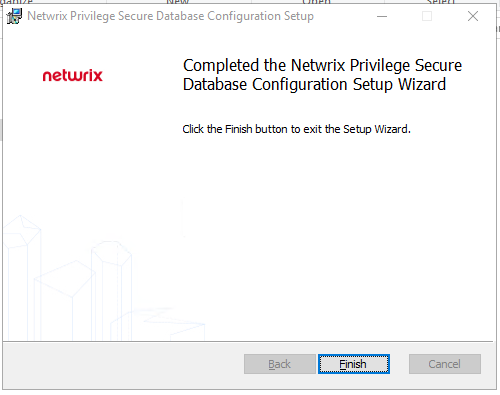
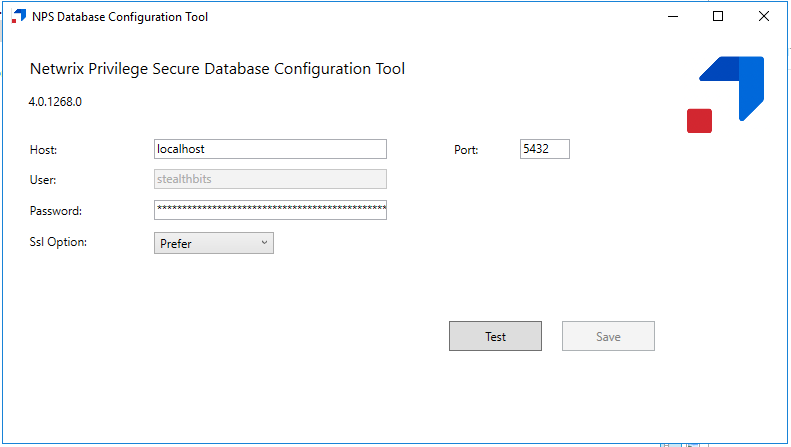
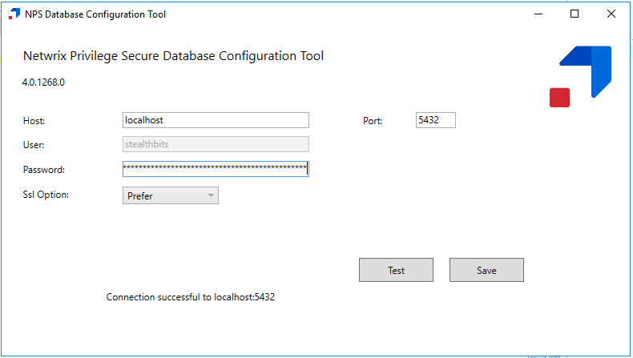
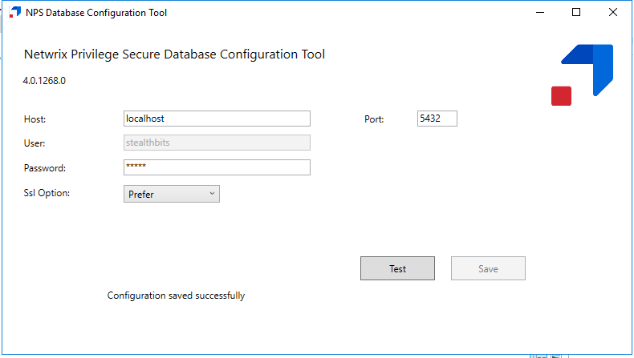

Summary
While it is essential that remote access to the NPS server be locked down, as an additional layer of security, organizations may wish to further harden their NPS server by periodically changing the password to the NPS Postgres database. As such, NPS comes with a Database Configuration tool (DbCfg.msi) that allows the changing of the privileged Postgres service account password used by NPS.The changed password should be securely vaulted, and local Administrator access to the DbCfg tool should be tightly controlled.
Instructions
1. On the NPS server, navigate to the "Extras" folder in the NPS installer download directory. The Database Configuration tool installer (DbCfg.msi) is included in this directory. Launch the installer, and select "Next".
2. Review and accept the EULA. Select "Next".

3. Choose an installation path. The default installation path is C:\Program Files\Stealthbits\PAM\. Select "Next".

4. Select "Install", and confirm any UAC prompt that occurs.

5. The installation will complete shortly.

6. Navigate to the installation directory and launch DbCfg.exe from your chosen installation directory.

7. You can click "Test" to confirm your connection to the Postgres DB.

8. You can set a new password in the Password field and hit Save to change the Postgres password. If your Test connection from 7 was successful, then you should receive a "Configuration saved successfully" response, which indicates a successful password change. This change will have propagated to any NPS service that needs to use the database password.
